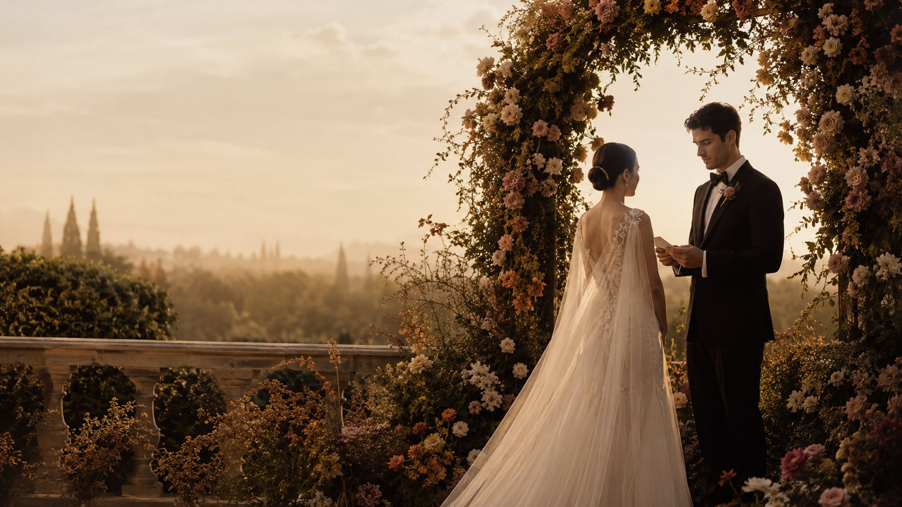
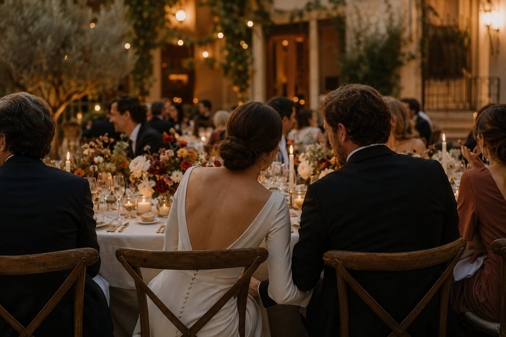

Los mejores recuerdos empiezan mucho antes del gran día.
Cada celebración tiene una historia. La vuestra merece ser vivida.
En Varenza acompañamos a cada pareja desde el primer día, cuidando cada detalle con calma, cercanía y dedicación para que solo tengáis que disfrutar de vuestro día con la confianza de saber que todo está en buenas manos.
El enfoque
En tu boda también deberías sentirte como un invitado.
Tu boda no debería vivirse entre llamadas, horarios o decisiones de última hora. Debería ser un día para abrazar, emocionarte, brindar y compartir cada instante con las personas que más quieres.
Mientras tú disfrutas de todo lo importante, nosotros nos ocupamos de lo que ocurre detrás para que cada momento suceda con la naturalidad con la que lo imaginaste.

A tu lado en cada etapa
De la idea al último baile.
-
Concepto y diseño de la boda
Definimos el estilo, la atmósfera y la identidad de tu celebración.
-
Búsqueda y selección de proveedores
Os ayudamos a encontrar a los profesionales que mejor encajan con vuestro proyecto.
-
Planificación del calendario
Organizamos cada fase para que sepáis qué decisión tomar en cada momento.
-
Gestión del presupuesto
Controlamos la inversión y priorizamos cada partida con criterio.
-
Coordinación de todos los profesionales
Centralizamos la comunicación para que todo el equipo trabaje bajo una misma dirección.
-
Supervisión del montaje
Revisamos que cada espacio esté preparado tal y como se ha planificado.
-
Dirección del día de la boda
Coordinamos los tiempos, el desarrollo de la celebración y a todos los proveedores para que todo fluya con naturalidad.
-
Resolución de imprevistos
Nos anticipamos a los pequeños contratiempos y resolvemos cualquier incidencia sin que tengáis que preocuparos.
-
Acompañamiento durante todo el proceso
Estaremos a vuestro lado desde el primer café hasta el último baile, resolviendo dudas, guiándoos en cada decisión y haciendo que el camino hacia vuestra boda sea tan especial como el propio día.
Celebraciones reales
Celebraciones que ya han tomado forma.
Boda de Ana e Ismael
El primer paso
¿Hablamos?
Cuéntanos cómo imaginas el día más feliz de tu vida y nosotros te ayudamos a convertirlo en realidad.